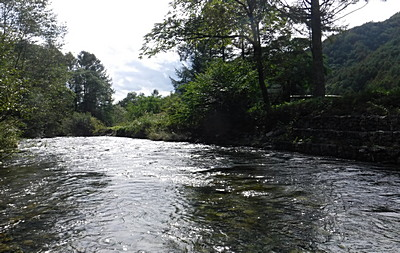
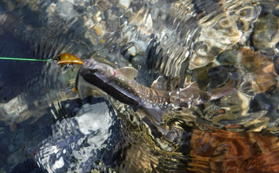
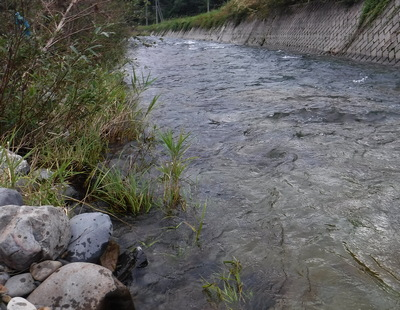
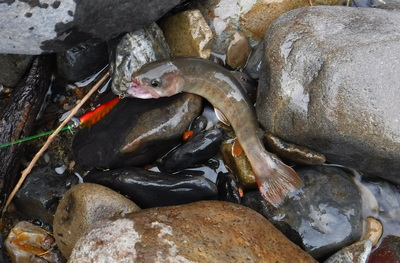
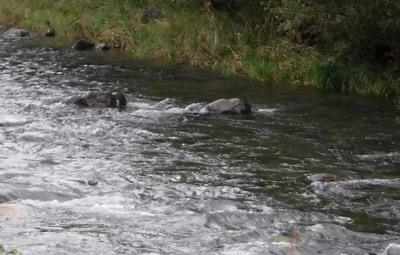

釣行日誌 故郷編
2018/09/17 ２度目の今期最終戦
本当なら、先週９月９日が今期の最終戦のつもりだったのだが、あまりの大増水でほとんど釣りにならなかったので未練が残り、今日も約200kmの道のりを独りで車を走らせて来た。
途中のコンビニでお昼のパンと飲み物、入漁券を買う。いつものおばさんが、
「どちらまで行かれるの？ クマに気を付けてね！」
と、今日も有難いお言葉を掛けてくれる。車を出す前に、時間節約のために途中で運転しながら食べてしまおうと、パンを３つとも袋から出して助手席に敷いたレジ袋の上に積んでおく。
しばらく順調にドライブは続き、長い下り坂の信号に来た時に黄色に変わったのでちょっと急にブレーキを踏んだら、助手席のパンが勢いで全部フロアマットに滑り落ちた。（笑）
『ガーンっ！』
まぁ、ほこりを払えば問題無いさ.......と、拾い上げて、今度は落ちないように、シートの間の低いスペースに置き直す。
幹線国道を外れて峠へ向かう交通量の少ない道に入ったので、手を伸ばしてパンを取り、ハンドルを握りつつかぶりつく。そんなに急がなくても良いのだが、なぜか心がせわしなく追い立てられるのだ。
さて12時半過ぎに現場に着いて、釣り支度を整える。先週折れた新品ロッドは修理に出したので、今日は予備のパックロッドを使う。相変わらずのウェットウェーディングスタイルであるが、これまでちょっと転んだりしただけで膝小僧を擦りむいたりスネを打ったりして痛い思いをしてきた。そこで今日は、数日前に釣り具店で見かけて、 『これは良さそうだな.......値段も手頃だし！』 と思って購入したネオプレンゲーターを膝から足首まで巻き付ける。これなら少々の打ち身なら保護してくれそうだし、流れに踏み込むときの冷たさがだいぶ和らぐだろう。
さあ本日最初のポイントは８月26日にクマが目撃された場所に近い、最上流の堰堤。数日前にまた少し雨が降ったので、今日も水位が高くて釣りにくい。流れ込み、護床ブロック前面の淀み、右岸の木立の下、手を替え品を替えシンキングミノーを引いてみるが反応は無い。
『おかしいなぁ.......？』
このポイントでは、大なり小なり１尾はいつも顔を見せてくれるのだが。
いったん堰堤下から畑に上がり、例のクマのテリトリーであろう林に踏み込み、藪漕ぎをして水辺を目指す。歩みに合わせてピッピッ、フッフッと、クマ避け笛と息継ぎをリズム良く交互に繰り返しながら林の中を抜けて行く。クマよ、頼むから遠くへ去ってくれ.......。
あの良い思いよ、もう一度ということで、長く続く瀬を攻め始める。繁みの下の深み、対岸のエグレ、良型３連発だった泥岩の細長い淵、沢の出合い、暗い木陰の小堰堤などなど、釣り下りながらめぼしいポイントは全て攻めてみるが、全然だめである。チラチラと魚影が数回見えたが、活性が低く、パクリと咥えるまでには至らない。まだ増水がきつくてイワナが居場所に戻ってないのか？ それならどこに居るのだ？ それとも食欲が無いのか？
対岸に階段状のフトン籠（鉄線の網に玉石を積めた護岸用構造物）が連続して積まれている長いトロ瀬に出た。

ダラダラと流れて変化の乏しいポイントであるが、遠投の効くルアーの強みを活かし、流れ込みから瀬尻目がけてミノーを飛ばす。シンキングなので根に掛けないよう少しロッドを立て気味にしてリトリーブしてくる。
「カツッ」
かすかなアタリがあり、少しだけロッドが曲がる。あまり大きくは無い。リールの巻き上げにほとんど抵抗を見せず、なすがままに上がってきたのは放流サイズのイワナであった。ミノーのテールフックに掛かっている。

ネットに入れるまでもなかったので、水に魚体を浸したままシングルフックを外し、そっと帰してやった。
さらに同じポイントをしつこく攻めると、同じくらいのサイズがまた釣れた。おそらく普段は餌釣りの人もフライフィッシャーマンも手を出さない場所なのだろう。あるいは流れの緩い瀬尻に小型イワナが避難していたのかもしれなかった。
８月26日に良い思いをしたポイントを次々と攻めながら釣り下るが、魚信が無い。結局国道下の幅広の堰堤まで行って、慎重に右岸に渡り、堰堤のコンクリートの上から落ち込みめがけてミノーを打ち込み、少し沈めてから引いてみるが、魚影のきらめきもロッドへの感触もまったく無い。
『こりゃ河岸を変えた方が良いな.......』
そう決断し、堰堤横の小径から農道へ上がり、20分ほど歩いて車へ戻る。
『さぁ今度は爆釣の淵だ。』
川の様子を横目で見ながら車を走らせて行くと、爆釣の淵の100mほど上流の瀬で、１人のフライマンがロッドを振っている。
『この増水では、彼も苦しかろう.......』
などと要らぬおせっかいを思い浮かべつつ、爆釣の淵まで行くと、空き地にはすでに１台車が停まっている。
『ははぁ、これはあのフライマンの車だな』
その後ろに停めて、橋を渡りながら淵とそれに続く下流の長い瀬を見渡すと誰も居ない。あのフライマンはきっとここから釣り上がって行くのだろうから、この淵からの釣り下りなら誰にも出くわすまいと判断し、淵へと降りる。
「爆釣の淵」では、その通称に反して魚信は無く、用水路伝いに歩み下って荒瀬に向かう。
荒瀬の頭に立ち、この増水の流れに負けないようにと、シンキングミノー赤金を結んで瀬尻に遠投。根掛かりに気を付け、少しロッドティップを高めに保持しながら、ごくゆっくりとリーリングしてくる。自分の立っている左岸側の葦の根元、わずかな弛みを通過して目の前まで泳いで来たミノーが水面を離れる瞬間、褐色の影が素早く覆いかぶさった。
『ああ～っ！ 喰いきれなかった！』
ほんの一瞬イワナの泳ぎが遅れ、咥える寸前にミノーを引き上げてしまったのだ。予想通りの居着き場から出たことは納得いったが、あと１歩でチャンスを逃したのが惜しかった。

『口がフックに触っていなかったから、きっとまた出るぞ.......』
積極的心構えで、再びキャスト。そして３度、４度。ついに５投目でショックがロッドに伝わり、流れの中で魚影が反転を繰り返す。
『出た！』
勢いの強い水流の中を下流から引っ張って来ると、もう抵抗は見せなかった。ネットを出すまでも無かったので、水辺の石の上に魚体を横たえる。派手なミノーのテールフックがしっかりと下顎に刺さっている。

この１尾は普段釣っているものとは明らかに異なり、体色が薄く、オレンジ色の反転が妙に鮮やか過ぎる。
『これは成魚放流されたものだな.......』
上手の橋で放流されたのち、ここまで下がってきたのだろうと思われた。この状況の下、予想通りのポイントで１尾出たので放流ものらしくても嬉しかった。
キャスト、ゆっくりめのリーリング、時折のトゥイッチ、を繰り返しつつ５、６歩ずつ下流へ進み、気配のありそうなポイントをしらみつぶしで攻めて行く。
奔流の中に大石が２つ、頭を出している。その下流側に四畳半ほどの広さの弛みがあった。

『むむ、あそこは怪しい.......』
１度流心に投げ込み、自動でアクションするミノーを回り込むようなコースで弛みの下流部へと誘導する。弛みの核心部では、なるべく底近くをトレースしつつ、根掛かりには気を付けて引いて来る。
「コツッ」
かすかなショックがティップに伝わり、水中で魚が抵抗を始める。ロッドを立ててリールを巻くと、あっけなく寄って来る。可愛いサイズのイワナであった。今度はこの川で見られる本来のイワナ（？）の体色をしている。ネットも使わず写真も撮さず、水面でフックを外してやると、一目散に深みへと消えた。
増水した今日のこのチャラ瀬区間では、ここが唯一の居場所だったのか、その直後に連続して２尾がヒットした。いずれも放流サイズ。
『大物が下流から遡って来ていないかなぁ？』
はかない期待を胸に釣り下がって行くが、多くの堰堤によって、寸断といって良いくらいブツブツに流路が区切られているこの川では、長い距離のイワナの遡行は不可能であろう。
今日も我慢の釣りで、それらしいポケットを見つけてはミノーを振り込んでみるが、小型３連発の石裏以来反応が無くなった。８月１９日に体験した爆釣のチャラ瀬区間を全て攻め終わったが、結局４尾のみに終わった。あの日出たイワナたちはいったいどこへ行ってしまったのだろうか？
時刻はもうすぐ５時になろうとしていたので、これで今日は竿を納めることにして、増水した瀬を慎重に右岸へと渉る。もしこの急流に足を取られて転倒したらかなり下流まで流され、おそらく自力では岸に這い上がることは出来ないだろうと思えた。一巻の終わりだ。奔流に逆らわず、斜め下流方向にルートを取り、１歩１歩グリップを確保しつつ足を運ぶ。小さな里川だが、対岸までがとても長く思えた。
なんとか渡りきり、草むらに分け入る前に偏光サングラスと、首に掛けている眼鏡型ルーペを外してベストのポケットに入れ、ロッドを持っていない右手と両足で藪を這いずり上がる。やっとの思いで道路へ出ると、濡れた足回りがとても重く感じられた。
『今日は今期の最終戦のはずだったが、今一つすっきりしないなぁ。.......』
またしても増水に苦しめられ、やや不本意な結果に終わった今日の釣りを振り返りつつ車に戻る。
着替えて乾いた服を身につけ、車を出す頃にはすでに来週末の予定の調整に心が向いてしまっていたのであった。（笑）
釣行日誌 故郷編 目次へ
サイトマップ
ホームへ
お問い合わせ